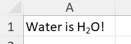

Cell formats
XLSX.getFormat — Function
getFormat(sh::Worksheet, cr::String) -> ::Union{Nothing, CellFormat}
getFormat(xf::XLSXFile, cr::String) -> ::Union{Nothing, CellFormat}
getFormat(sh::Worksheet, row::Int, col::int) -> ::Union{Nothing, CellFormat}Get the format (numFmt) used by a single cell at reference cr in a worksheet or XLSXFile. The specified cell must be within the sheet dimension.
Return a CellFormat object containing:
numFmtId: a 0-based index of the formats in the workbook. Values below 164 are reserved for built-in formats. Values of 164 and over are custom formats and are stored in thestyles.xmlfile within the XLSXFile.format: a dictionary of numFmt attributes: formatAttribute -> (attribute -> value)applyNumberFormat: "1" or "0", indicating whether or not the format is applied to the cell.
Return nothing if no cell format is found. This will occur when a cell uses a built-in format.
The function will always find any explicitly set custom format. It will also attempt to return the format for built-in formats, too.
Examples:
julia> getFormat(sh, "A1")
julia> getFormat(xf, "Sheet1!A1")
julia> getFormat(sh, 1, 1)
XLSX.setFormat — Function
setFormat(sh::Worksheet, cr::String; kw...) -> ::Int
setFormat(xf::XLSXFile, cr::String; kw...) -> ::Int
setFormat(sh::Worksheet, row, col; kw...) -> ::IntSet the number format used used by a single cell, a cell range, a column range or row range or a named cell or named range in a worksheet or XLSXFile. Alternatively, specify the row and column using any combination of Integer, UnitRange, Vector{Integer} or :.
The function uses one keyword used to define a format:
format::String = nothing: Defines a built-in or custom number format
The format keyword can define some built-in formats by name:
General: specifies internal format ID 0 (General)Number: specifies internal format ID 2 (0.00)Currency: specifies internal format ID 7 ($#,##0.00_);($#,##0.00))Percentage: specifies internal format ID 9 (0%)ShortDate: specifies internal format ID 14 (m/d/yyyy)LongDate: specifies internal format ID 15 (d-mmm-yy)Time: specifies internal format ID 21 (h:mm:ss)Scientific: specifies internal format ID 48 (##0.0E+0)
If Currency is specified, Excel will use the appropriate local currency symbol.
Alternatively, the format keyword can define built-in formats by their internal format ID (as a string). The following built-in format IDs are supported:
- "0" => "General"
- "1" => "0"
- "2" => "0.00",
- "3" => "#,##0"
- "4" => "#,##0.00"
- "5" => "$#,##0_);($#,##0)"
- "6" => "$#,##0_);Red"
- "7" => "$#,##0.00_);($#,##0.00)"
- "8" => "$#,##0.00_);Red"
- "9" => "0%"
- "10" => "0.00%"
- "11" => "0.00E+00"
- "12" => "# ?/?"
- "13" => "# ??/??"
- "14" => "m/d/yyyy"
- "15" => "d-mmm-yy"
- "16" => "d-mmm"
- "17" => "mmm-yy"
- "18" => "h:mm AM/PM"
- "19" => "h:mm:ss AM/PM"
- "20" => "h:mm"
- "21" => "h:mm:ss"
- "22" => "m/d/yyyy h:mm"
- "37" => "#,##0_);(#,##0)"
- "38" => "#,##0_);Red"
- "39" => "#,##0.00_);(#,##0.00)"
- "40" => "#,##0.00_);Red"
- "45" => "mm:ss"
- "46" => "[h]:mm:ss"
- "47" => "mmss.0"
- "48" => "##0.0E+0"
- "49" => "@"
Lastly, format can be used to specify any custom format directly. Only weak checks are made of custom formats specified - they are otherwise added to the XLSXFile verbatim.
Formats may need characters that must be escaped when specified (see penultimate example, below).
Examples:
julia> XLSX.setFormat(sh, "D2"; format = "h:mm AM/PM")
julia> XLSX.setFormat(xf, "Sheet1!A2"; format = "# ??/??")
julia> XLSX.setFormat(sh, "F1:F5"; format = "Currency")
julia> XLSX.setFormat(sh, "named_range"; format = "Percentage")
julia> XLSX.setFormat(sh, "A2"; format = "_-£* #,##0.00_-;-£* #,##0.00_-;_-£* \"-\"??_-;_-@_-")
julia> XLSX.setFormat(sh, "named_range"; format = "39") # specifies the built-in format "#,##0.00_);(#,##0.00)"
XLSX.setUniformFormat — Function
setUniformFormat(sh::Worksheet, cr::String; kw...) -> ::Int
setUniformFormat(xf::XLSXFile, cr::String, kw...) -> ::Int
setUniformFormat(sh::Worksheet, rows, cols; kw...) -> ::IntSet the number format used by a cell range, a column range or row range or a named range in a worksheet or XLSXFile to be to be uniformly the same format. Alternatively, specify the rows and columns using any combination of Integer, UnitRange, Vector{Integer} or :.
First, the number format of the first cell in the range (the top-left cell) is updated according to the given kw... (using setFormat()). The resultant format is then applied to each remaining cell in the range.
As a result, every cell in the range will have a uniform number format.
This is functionally equivalent to applying setFormat() to each cell in the range but may be more efficient.
Applying setUniformFormat() without any keyword arguments simply copies the Format attributes from the first cell specified to all the others.
The value returned is the numfmtId of the format uniformly applied to the cells. If all cells in the range are EmptyCells, the returned value is -1.
For keyword definitions see setFormat().
Examples:
julia> XLSX.setUniformFormat(xf, "Sheet1!A2:L6"; format = "# ??/??")
julia> XLSX.setUniformFormat(sh, "F1:F5"; format = "Currency")
julia> setUniformFormat(sh, "B2,A5:D22") # Copy `Format` from B2 to cells in A5:D22
XLSX.getFont — Function
getFont(sh::Worksheet, cr::String) -> ::Union{Nothing, CellFont}
getFont(xf::XLSXFile, cr::String) -> ::Union{Nothing, CellFont}
getFont(sh::Worksheet, row::Int, col::Int) -> ::Union{Nothing, CellFont}Get the font used by a single cell reference in a worksheet sh or XLSXFile xf. The specified cell must be within the sheet dimension.
Return a CellFont object containing:
fontId: a 0-based index of the font in the workbookfont: a dictionary of font attributes: fontAttribute -> (attribute -> value)applyFont: "1" or "0", indicating whether or not the font is applied to the cell.
Return nothing if no cell font is found.
Excel uses several tags to define font properties in its XML structure. Here's a list of some common tags and their purposes (thanks to Copilot!):
b: Indicates bold font.i: Indicates italic font.strike: Indicates strikethrough.condense: Condenses the font spacing.extend: Extends the font spacing.outline: Specifies outline text.shadow: Adds a shadow to the text.u: Specifies underlining (e.g., single, double).sz: Sets the font size.color: Sets the font color using RGB values).name: Specifies the font name.family: Defines the font family.charset: Specifies the character set code (e.g., 204 for Cyrillic).scheme: Specifies whether the font is part of the major or minor theme.
Excel defines colours in several ways. getFont will return the colour in any of these e.g. "color" => ("theme" => "1").
Examples:
julia> getFont(sh, "A1")
julia> getFont(xf, "Sheet1!A1")
julia> getFont(sh, "Sheet1!A1")
julia> getFont(sh, 1, 1)
XLSX.setFont — Function
setFont(sh::Worksheet, cr::String; kw...) -> ::Int
setFont(xf::XLSXFile, cr::String, kw...) -> ::Int
setFont(sh::Worksheet, row, col; kw...) -> ::IntSet the font used by a single cell, a cell range, a column range or row range or a named cell or named range in a worksheet or XLSXFile. Alternatively, specify the row and column using any combination of Integer, UnitRange, Vector{Integer} or :.
Font attributes are specified using keyword arguments:
bold::Bool = nothing: set totrueto make the font bold.italic::Bool = nothing: set totrueto make the font italic.under::String = nothing: set tosingle,doubleornone.strike::Bool = nothing: set totrueto strike through the font.size::Int = nothing: set the font size (0 < size < 410).color::String = nothing: set the font color.name::String = nothing: set the font name.vertAlign::String = nothing: set tosuperscript,subscriptorbaseline.
Only the attributes specified will be changed. If an attribute is not specified, the current value will be retained. These are the only attributes supported currently.
No validation of the font names specified is performed. Available fonts will depend on what your system has installed. If you specify, for example, name = "badFont", that value will be written to the XLSXFile.
As an expedient to get fonts to work, the scheme attribute is simply dropped from new font definitions.
The color attribute can be defined using 8-digit rgb values.
- The first two digits represent transparency (α). Excel ignores transparency.
- The next two digits give the red component.
- The next two digits give the green component.
- The next two digits give the blue component.
So, FF000000 means a fully opaque black color.
Alternatively, you can use the name of any named color from Colors.jl.
Font attributes cannot be set for EmptyCells. Set a cell value first. If a cell range or column range includes any EmptyCells, they will be quietly skipped and the font will be set for the remaining cells.
For single cells, the value returned is the fontId of the font applied to the cell. This can be used to apply the same font to other cells or ranges.
For cell ranges, column ranges and named ranges, the value returned is -1 unless the range resolves to a single cell, in which case that cell's id is returned.
Examples:
julia> setFont(sh, "A1"; bold=true, italic=true, size=12, name="Arial") # Single cell
julia> setFont(xf, "Sheet1!A1"; bold=false, size=14, color="yellow") # Single cell
julia> setFont(sh, "A1:B7"; name="Aptos", under="double", strike=true) # Cell range
julia> setFont(xf, "Sheet1!A1:B7"; size=24, name="Berlin Sans FB Demi") # Cell range
julia> setFont(sh, "A:B"; italic=true, color="green", under="single") # Column range
julia> setFont(xf, "Sheet1!A:B"; italic=true, color="red", under="single") # Column range
julia> setFont(xf, "Sheet1!6:12"; italic=false, color="FF8888FF", under="none") # Row range
julia> setFont(sh, "bigred"; size=48, color="FF00FF00") # Named cell or range
julia> setFont(xf, "bigred"; size=48, color="magenta") # Named cell or range
julia> setFont(sh, 1, 2; size=48, color="magenta") # row and column as integers
julia> setFont(sh, 1:3, 2; size=48, color="magenta") # row as unit range
julia> setFont(sh, 6, [2, 3, 8, 12]; size=48, color="magenta") # column as vector of indices
julia> setFont(sh, :, 2:6; size=48, color="lightskyblue2") # all rows, columns 2 to 6
XLSX.setUniformFont — Function
setUniformFont(sh::Worksheet, cr::String; kw...) -> ::Int
setUniformFont(xf::XLSXFile, cr::String, kw...) -> ::Int
setUniformFont(sh::Worksheet, rows, cols; kw...) -> ::IntSet the font used by a cell range, a column range or row range or a named range in a worksheet or XLSXFile to be uniformly the same font. Alternatively, specify the rows and columns using any combination of Integer, UnitRange, Vector{Integer} or :.
First, the font attributes of the first cell in the range (the top-left cell) are updated according to the given kw... (using setFont()). The resultant font is then applied to each remaining cell in the range.
As a result, every cell in the range will have a uniform font setting.
This differs from setFont() which merges the attributes defined by kw... into the font definition used by each cell individually. For example, if you set the font size to 12 for a range of cells, but these cells all use different fonts names or colors, etc, setFont() will change the font size but leave the font name and color unchanged for each cell individually.
In contrast, setUniformFont() will set the font size to 12 for the first cell, but will then apply all the font attributes from the updated first cell (ie. name, color, etc) to all the other cells in the range.
This can be more efficient when setting the same font for a large number of cells.
Applying setUniformFont() without any keyword arguments simply copies the Font attributes from the first cell specified to all the others.
The value returned is the fontId of the font uniformly applied to the cells. If all cells in the range are EmptyCells the returned value is -1.
For keyword definitions see setFont().
Examples:
julia> setUniformFont(sh, "A1:B7"; bold=true, italic=true, size=12, name="Arial") # Cell range
julia> setUniformFont(xf, "Sheet1!A1:B7"; size=24, name="Berlin Sans FB Demi") # Cell range
julia> setUniformFont(sh, "A:B"; italic=true, color="FF8888FF", under="single") # Column range
julia> setUniformFont(xf, "Sheet1!A:B"; italic=true, color="FF8888FF", under="single") # Column range
julia> setUniformFont(sh, "33"; italic=true, color="FF8888FF", under="single") # Row
julia> setUniformFont(sh, "bigred"; size=48, color="FF00FF00") # Named range
julia> setUniformFont(sh, 1, [2, 4, 6]; size=48, color="lightskyblue2") # vector of column indices
julia> setUniformFont(sh, "B2,A5:D22") # Copy `Font` from B2 to cells in A5:D22
XLSX.getBorder — Function
getBorder(sh::Worksheet, cr::String) -> ::Union{Nothing, CellBorder}
getBorder(xf::XLSXFile, cr::String) -> ::Union{Nothing, CellBorder}
getBorder(sh::Worksheet, row::Int, col::Int) -> ::Union{Nothing, CellBorder}Get the borders used by a single cell at reference in a worksheet or XLSXFile. The specified cell must be within the sheet dimension.
Return a CellBorder object containing:
borderId: a 0-based index of the border in the workbookborder: a dictionary of border attributes: borderAttribute -> (attribute -> value)applyBorder: "1" or "0", indicating whether or not the border is applied to the cell.
Return nothing if no cell border is found.
A cell border has two attributes, style and color. A diagonal border also needs to specify a direction indicating whether a diagonal is needed from bottom-left to top-right ("up"), from top-left to bottom-left ("down") or "both"
Here's a list of the available styles (thanks to Copilot!):
nonethinmediumdasheddottedthickdoublehairmediumDasheddashDotmediumDashDotdashDotDotmediumDashDotDotslantDashDot
A border postion element (e.g. top or left) has a style attribute, but color is a child element. The color element has one or two attributes (e.g. rgb) that define the color of the border. While the key for the style element will always be style, the keys for the color element will vary depending on how the color is defined (e.g. rgb, indexed, auto, etc.). Thus, for example, "top" => Dict("style" => "thin", "rgb" => "FF000000") would indicate a thin black border at the top of the cell while "top" => Dict("style" => "thin", "auto" => "1") would indicate that the color is set automatically by Excel.
The color element can have the following attributes:
auto: Indicates that the color is automatically defined by Excelindexed: Specifies the color using an indexed color value.rgb: Specifies the rgb color using 8-digit hexadecimal format.theme: Specifies the color using a theme color.tint: Specifies the tint value to adjust the lightness or darkness of the color.
tint can only be used in conjunction with the theme attribute to derive different shades of the theme color. For example: <color theme="1" tint="-0.5"/>.
Examples:
julia> getBorder(sh, "A1")
julia> getBorder(sh, 3, 6)
julia> getBorder(xf, "Sheet1!A1")
XLSX.setBorder — Function
setBorder(sh::Worksheet, cr::String; kw...) -> ::Int
setBorder(xf::XLSXFile, cr::String; kw...) -> ::Int
setBorder(sh::Worksheet, row, col; kw...) -> ::IntSet the borders used used by a single cell, a cell range, a column range or row range or a named cell or named range in a worksheet or XLSXFile. Alternatively, specify the row and column using any combination of Integer, UnitRange, Vector{Integer} or :.
Borders are independently defined for the keywords:
left::Vector{Pair{String,String}} = nothingright::Vector{Pair{String,String}} = nothingtop::Vector{Pair{String,String}} = nothingbottom::Vector{Pair{String,String}} = nothingdiagonal::Vector{Pair{String,String}} = nothing[allsides::Vector{Pair{String,String}} = nothing][outside::Vector{Pair{String,String}} = nothing]
These represent each of the sides of a cell . The keyword diagonal defines diagonal lines running across the cell. These lines must share the same style and color in any cell.
An additional keyword, allsides, is provided for convenience. It can be used in place of the four side keywords to apply the same border setting to all four sides at once. It cannot be used in conjunction with any of the side-specific keywords or with outside but it can be used together with diagonal.
A further keyword, outside, can be used to set the outside border around a range. Any internal borders will remain unchanged. An outside border cannot be set for any non-contiguous/non-rectangular range, cannot be indexed with vectors and cannot be used in conjunction with any other keywords.
The two attributes that can be set for each keyword are style and color. Additionally, for diagonal borders, a third keyword, direction can be used.
Allowed values for style are:
nonethinmediumdasheddottedthickdoublehairmediumDasheddashDotmediumDashDotdashDotDotmediumDashDotDotslantDashDot
The color attribute can be set by specifying an 8-digit hexadecimal value in the format "FFRRGGBB". The transparency ("FF") is ignored by Excel but is required. Alternatively, you can use the name of any named color from Colors.jl.
Valid values for the direction keyword (for diagonal borders) are:
up: diagonal border runs bottom-left to top-rightdown: diagonal border runs top-left to bottom-rightboth: diagonal borders run both ways
Both diagonal borders share the same style and color.
Setting only one of the attributes leaves the other attributes unchanged for that side's border. Omitting one of the keywords leaves the border definition for that side unchanged, only updating the other, specified sides.
Border attributes cannot be set for EmptyCells. Set a cell value first. If a cell range or column range includes any EmptyCells, they will be quietly skipped and the border will be set for the remaining cells.
For single cells, the value returned is the borderId of the borders applied to the cell. This can be used to apply the same borders to other cells or ranges.
For cell ranges, column ranges and named ranges, the value returned is -1 unless the range resolves to a single cell, in which case that cell's id is returned.
Examples:
Julia> setBorder(sh, "D6"; allsides = ["style" => "thick"], diagonal = ["style" => "hair", "direction" => "up"])
Julia> setBorder(sh, 2:45, 2:12; outside = ["style" => "thick", "color" => "lightskyblue2"])
Julia> setBorder(xf, "Sheet1!D4"; left = ["style" => "dotted", "color" => "FF000FF0"],
right = ["style" => "medium", "color" => "firebrick2"],
top = ["style" => "thick", "color" => "FF230000"],
bottom = ["style" => "medium", "color" => "goldenrod3"],
diagonal = ["style" => "dotted", "color" => "FF00D4D4", "direction" => "both"]
)
XLSX.setUniformBorder — Function
setUniformBorder(sh::Worksheet, cr::String; kw...) -> ::Int
setUniformBorder(xf::XLSXFile, cr::String, kw...) -> ::Int
setUniformBorder(sh::Worksheet, rows, cols; kw...) -> ::IntSet the border used by a cell range, a column range or row range or a named range in a worksheet or XLSXFile to be uniformly the same border. Alternatively, specify the rows and columns using any combination of Integer, UnitRange, Vector{Integer} or :.
First, the border attributes of the first cell in the range (the top-left cell) are updated according to the given kw... (using setBorder()). The resultant border is then applied to each remaining cell in the range.
As a result, every cell in the range will have a uniform border setting.
This differs from setBorder() which merges the attributes defined by kw... into the border definition used by each cell individually. For example, if you set the border style to thin for a range of cells, but these cells all use different border colors, setBorder() will change the border style but leave the border color unchanged for each cell individually.
In contrast, setUniformBorder() will set the border style to thin for the first cell, but will then apply all the border attributes from the updated first cell (ie. both style and color) to all the other cells in the range.
This can be more efficient when setting the same border for a large number of cells.
Applying setUniformBorder() without any keyword arguments simply copies the Border attributes from the first cell specified to all the others.
The value returned is the borderId of the border uniformly applied to the cells. If all cells in the range are EmptyCells the returned value is -1.
For keyword definitions see setBorder().
Note: setUniformBorder cannot be used with the outside keyword.
Examples:
Julia> setUniformBorder(sh, "B2:D6"; allsides = ["style" => "thick"], diagonal = ["style" => "hair"])
Julia> setUniformBorder(sh, [1, 2, 3], [3, 5, 9]; allsides = ["style" => "thick"], diagonal = ["style" => "hair", "color" => "yellow2"])
Julia> setUniformBorder(xf, "Sheet1!A1:F20"; left = ["style" => "dotted", "color" => "FF000FF0"],
right = ["style" => "medium", "color" => "FF765000"],
top = ["style" => "thick", "color" => "FF230000"],
bottom = ["style" => "medium", "color" => "FF0000FF"],
diagonal = ["style" => "none"]
)
julia> setUniformBorder(sh, "B2,A5:D22") # Copy `Border` from B2 to cells in A5:D22
XLSX.getFill — Function
getFill(sh::Worksheet, cr::String) -> ::Union{Nothing, CellFill}
getFill(xf::XLSXFile, cr::String) -> ::Union{Nothing, CellFill}
getFill(sh::Worksheet, row::Int, col::Int) -> ::Union{Nothing, CellFill}Get the fill used by a single cell at reference cr in a worksheet or XLSXFile. The specified cell must be within the sheet dimension.
Return a CellFill object containing:
fillId: a 0-based index of the fill in the workbookfill: a dictionary of fill attributes: borderAttribute -> (attribute -> value)applyFill: "1" or "0", indicating whether or not the fill is applied to the cell.
Return nothing if no cell fill is found.
The fill element in Excel's XML schema defines the pattern and color properties for cell fills. The primary attributes and child elements in the patternFill element are:
patternType: Specifies the type of fill pattern (see below).fgColor: Specifies the foreground color of the pattern.bgColor: Specifies the background color of the pattern.
The child elements fgColor and bgColor can each have one or two attributes of their own. These color attributes are pushed in to the CellFill.fill Dict of attributes with either fg or bg prepended to their names to support later reconstruction of the xml element.
Thus: "patternFill" => Dict("patternType" => "solid", "bgindexed" => "64", "fgtheme" => "0") indicates a solid fill with a foreground color defined by theme 0 (in Excel) and background color defined by an indexed value. In this case (solid fill), the background color will be ignored.
Here is a list of the patternTypes Excel uses (thanks to Copilot!):
nonesolidmediumGraydarkGraylightGraydarkHorizontaldarkVerticaldarkDowndarkUpdarkGriddarkTrellislightHorizontallightVerticallightDownlightUplightGridlightTrellisgray125gray0625
Definitions for neither fgColor (foreground color) nor bgColor (background color) are strictly necessary although certain pattern types are more visually meaningful when both are defined. These pattern types include those that create a pattern or grid effect, where the contrast between the foreground and background colors enhances the visual presentation.
These pattern types include darkTrellis, darkGrid, darkHorizontal, darkVertical, darkDown, darkUp, mediumGray, lightGray, lightTrellis, lightGrid, lightHorizontal, lightVertical, lightDown, lightUp, gray125 and gray0625.
If fgColor (foreground color) and bgColor (background color) are specified when they aren't needed, they will simply be ignored by Excel, and the default appearance will be applied.
Examples:
julia> getFill(sh, "A1")
julia> getFill(sh, 3, 4)
julia> getFill(xf, "Sheet1!A1")
XLSX.setFill — Function
setFill(sh::Worksheet, cr::String; kw...) -> ::Int
setFill(xf::XLSXFile, cr::String; kw...) -> ::Int
setFill(sh::Worksheet, row, col; kw...) -> ::IntSet the fill used used by a single cell, a cell range, a column range or row range or a named cell or named range in a worksheet or XLSXFile. Alternatively, specify the row and column using any combination of Integer, UnitRange, Vector{Integer} or :.
The following keywords are used to define a fill:
pattern::String = nothing: Sets the patternType for the fill.fgColor::String = nothing: Sets the foreground color for the fill.bgColor::String = nothing: Sets the background color for the fill.
Here is a list of the available pattern values (thanks to Copilot!):
nonesolidmediumGraydarkGraylightGraydarkHorizontaldarkVerticaldarkDowndarkUpdarkGriddarkTrellislightHorizontallightVerticallightDownlightUplightGridlightTrellisgray125gray0625
The two colors may be set by specifying an 8-digit hexadecimal value for the fgColor and/or bgColor keywords. Alternatively, you can use the name of any named color from Colors.jl.
Setting only one or two of the attributes leaves the other attribute(s) unchanged for that cell's fill.
Fill attributes cannot be set for EmptyCells. Set a cell value first. If a cell range or column range includes any EmptyCells, they will be quietly skipped and the fill will be set for the remaining cells.
For single cells, the value returned is the fillId of the fill applied to the cell. This can be used to apply the same fill to other cells or ranges.
For cell ranges, column ranges and named ranges, the value returned is -1 unless the range resolves to a single cell, in which case that cell's id is returned.
Examples:
Julia> setFill(sh, "B2"; pattern="gray125", bgColor = "FF000000")
Julia> setFill(xf, "Sheet1!A1:F20"; pattern="none", fgColor = "darkseagreen3")
Julia> setFill(sh, "11:24"; pattern="none", fgColor = "yellow2")
XLSX.setUniformFill — Function
setUniformFill(sh::Worksheet, cr::String; kw...) -> ::Int
setUniformFill(xf::XLSXFile, cr::String, kw...) -> ::Int
setUniformFill(sh::Worksheet, rows, cols; kw...) -> ::IntSet the fill used by a cell range, a column range or row range or a named range in a worksheet or XLSXFile to be uniformly the same fill. Alternatively, specify the rows and columns using any combination of Integer, UnitRange, Vector{Integer} or :.
First, the fill attributes of the first cell in the range (the top-left cell) are updated according to the given kw... (using setFill()). The resultant fill is then applied to each remaining cell in the range.
As a result, every cell in the range will have a uniform fill setting.
This differs from setFill() which merges the attributes defined by kw... into the fill definition used by each cell individually. For example, if you set the fill patern to darkGrid for a range of cells, but these cells all use different fill colors, setFill() will change the fill pattern but leave the fill color unchanged for each cell individually.
In contrast, setUniformFill() will set the fill pattern to darkGrid for the first cell, but will then apply all the fill attributes from the updated first cell (ie. pattern and both foreground and background colors) to all the other cells in the range.
This can be more efficient when setting the same fill for a large number of cells.
Applying setUniformFill() without any keyword arguments simply copies the Fill attributes from the first cell specified to all the others.
The value returned is the fillId of the fill uniformly applied to the cells. If all cells in the range are EmptyCells the returned value is -1.
For keyword definitions see setFill().
Examples:
Julia> setUniformFill(sh, "B2:D4"; pattern="gray125", bgColor = "FF000000")
Julia> setUniformFill(xf, "Sheet1!A1:F20"; pattern="none", fgColor = "darkseagreen3")
julia> setUniformFill(sh, "B2,A5:D22") # Copy `Fill` from B2 to cells in A5:D22
XLSX.getAlignment — Function
getAlignment(sh::Worksheet, cr::String) -> ::Union{Nothing, CellAlignment}
getAlignment(xf::XLSXFile, cr::String) -> ::Union{Nothing, CellAlignment}
getAlignment(sh::Worksheet, row::Int, col::Int) -> ::Union{Nothing, CellAlignment}Get the alignment used by a single cell at reference cr in a worksheet or XLSXFile. The specified cell must be within the sheet dimension.
Return a CellAlignment object containing:
alignment: a dictionary of alignment attributes: alignmentAttribute -> (attribute -> value)applyAlignment: "1" or "0", indicating whether or not the alignment is applied to the cell.
Return nothing if no cell alignment is found.
The alignment element in Excel's XML schema defines the following attributes:
horizontal: Specifies the horizontal alignment of the cell.vertical: Specifies the vertical alignment of the cell.wrapText: Specifies whether ("1") or not ("0") the cell content wraps in the cell.shrinkToFit: Indicates whether ("1") or not ("0") the text should shrink to fit the cell.indent: Specifies the number of spaces by which to indent the text (always from the left).textRotation: Specifies the rotation angle of the text in a range -90 to 90 (positive values rotate the text counterclockwise).
Excel supports the following values for the horizontal alignment:
left: Aligns the text to the left of the cell.center: Centers the text within the cell.right: Aligns the text to the right of the cell.fill: Repeats the text to fill the entire width of the cell.justify: Justifies the text, spacing it out so that it spans the entire width of the cell.centerContinuous: Centers the text across multiple cells (specifically the currrent cell and all empty cells to the right) as if the text were in a merged cell.distributed: Distributes the text evenly across the width of the cell.
Excel supports the following values for the vertical alignment:
top: Aligns the text to the top of the cell.center: Centers the text vertically within the cell.bottom: Aligns the text to the bottom of the cell.justify: Justifies the text vertically, spreading it out evenly within the cell.distributed: Distributes the text evenly from top to bottom in the cell.
Examples:
julia> getAlignment(sh, "A1")
julia> getAlignment(sh, 2, 5) # Cell E2
julia> getAlignment(xf, "Sheet1!A1")
XLSX.setAlignment — Function
setAlignment(sh::Worksheet, cr::String; kw...) -> ::Int}
setAlignment(xf::XLSXFile, cr::String; kw...) -> ::Int}
setAlignment(sh::Worksheet, row, col; kw...) -> ::Int}Set the alignment used used by a single cell, a cell range, a column range or row range or a named cell or named range in a worksheet or XLSXFile. Alternatively, specify the row and column using any combination of Integer, UnitRange, Vector{Integer} or :.
The following keywords are used to define an alignment:
horizontal::String = nothing: Sets the horizontal alignment.vertical::String = nothing: Sets the vertical alignment.wrapText::Bool = nothing: Determines whether the cell content wraps within the cell.shrink::Bool = nothing: Indicates whether the text should shrink to fit the cell.indent::Int = nothing: Specifies the number of spaces by which to indent the text (always from the left).rotation::Int = nothing: Specifies the rotation angle of the text in the range -90 to 90 (positive values rotate the text counterclockwise),
Here are the possible values for the horizontal alignment:
left: Aligns the text to the left of the cell.center: Centers the text within the cell.right: Aligns the text to the right of the cell.fill: Repeats the text to fill the entire width of the cell.justify: Justifies the text, spacing it out so that it spans the entire width of the cell.centerContinuous: Centers the text across multiple cells (specifically the currrent cell and all empty cells to the right) as if the text were in a merged cell.distributed: Distributes the text evenly across the width of the cell.
Here are the possible values for the vertical alignment:
top: Aligns the text to the top of the cell.center: Centers the text vertically within the cell.bottom: Aligns the text to the bottom of the cell.justify: Justifies the text vertically, spreading it out evenly within the cell.distributed: Distributes the text evenly from top to bottom in the cell.
For single cells, the value returned is the styleId of the cell.
For cell ranges, column ranges and named ranges, the value returned is -1 unless the range resolves to a single cell, in which case that cell's id is returned.
Examples:
julia> setAlignment(sh, "D18"; horizontal="center", wrapText=true)
julia> setAlignment(xf, "sheet1!D18"; horizontal="right", vertical="top", wrapText=true)
julia> setAlignment(sh, "L6"; horizontal="center", rotation="90", shrink=true, indent="2")
julia> setAlignment(sh, 1:3, 3:6; horizontal="center", rotation="90", shrink=true, indent="2")
XLSX.setUniformAlignment — Function
setUniformAlignment(sh::Worksheet, cr::String; kw...) -> ::Int
setUniformAlignment(xf::XLSXFile, cr::String, kw...) -> ::Int
setUniformAlignment(sh::Worksheet, rows, cols; kw...) -> ::IntSet the alignment used by a cell range, a column range or row range or a named range in a worksheet or XLSXFile to be uniformly the same alignment. Alternatively, specify the rows and columns using any combination of Integer, UnitRange, Vector{Integer} or :.
First, the alignment attributes of the first cell in the range (the top-left cell) are updated according to the given kw... (using setAlignment()). The resultant alignment is then applied to each remaining cell in the range.
As a result, every cell in the range will have a uniform alignment setting.
This differs from setAlignment() which merges the attributes defined by kw... into the alignment definition used by each cell individually. For example, if you set the horizontal alignment to left for a range of cells, but these cells all use different vertical alignment or wrapText, setAlignment() will change the horizontal alignment but leave the vertical alignment and wrapText unchanged for each cell individually.
In contrast, setUniformAlignment() will set the horizontal alignment to left for the first cell, but will then apply all the alignment attributes from the updated first cell to all the other cells in the range.
This can be more efficient when setting the same alignment for a large number of cells.
Applying setUniformAlignment() without any keyword arguments simply copies the Alignment attributes from the first cell specified to all the others.
The value returned is the styleId of the reference (top-left) cell, from which the alignment uniformly applied to the cells was taken. If all cells in the range are EmptyCells, the returned value is -1.
For keyword definitions see setAlignment().
Examples:
Julia> setUniformAlignment(sh, "B2:D4"; horizontal="center", wrap = true)
Julia> setUniformAlignment(xf, "Sheet1!A1:F20"; horizontal="center", vertical="top")
Julia> setUniformAlignment(sh, :, 1:24; horizontal="center", vertical="top")
julia> setUniformAlignment(sh, "B2,A5:D22") # Copy `Alignment` from B2 to cells in A5:D22
XLSX.setUniformStyle — Function
setUniformStyle(sh::Worksheet, cr::String) -> ::Int
setUniformStyle(xf::XLSXFile, cr::String) -> ::Int
setUniformStyle(sh::Worksheet, rows, cols) -> ::IntSet the cell style used by a cell range, a column range or row range or a named range in a worksheet or XLSXFile to be the same as that of the first cell in the range that is not an EmptyCell. Alternatively, specify the rows and columns using any combination of Integer, UnitRange, Vector{Integer} or :.
As a result, every cell in the range will have a uniform style.
A cell style consists of the collection of format, alignment, border, font and fill.
If the first cell has no defined style (s=""), all cells will be given the same undefined style.
The value returned is the styleId of the style uniformly applied to the cells or nothing if the style is undefined. If all cells in the range are EmptyCells, the returned value is -1.
Examples:
julia> XLSX.setUniformStyle(xf, "Sheet1!A2:L6")
julia> XLSX.setUniformStyle(sh, "F1:F5")
julia> XLSX.setUniformStyle(sh, 2:5, 5)
julia> XLSX.setUniformStyle(sh, 2, :)
XLSX.RichTextRun — Type
RichTextRun(text::String, pairs::Union{Nothing,Vector{Pair{Symbol,Any}}}=nothing) -> RichTextRun
RichTextRun(text::String) -> RichTextRunCreate an instance of a RichTextRun, representing a formatted substring element (run) to form part of a RichTextString. Each RichTextRun defines none, one or several font attributes to apply to its text.
textspecifies the text of the run's substring element.pairsis a vector of formatting attributes to apply totext(default =nothing).
Valid attributes that can be defined in pairs are:
:bold- set:bold => truefor this run to be emboldened. Omit otherwise.:italic- set:italic => truefor this run to be italicised. Omit otherwise.:under- set:under => trueto underline this run. Omit otherwise.:strike- set:strike => trueto apply strikethrough to this run. Omit otherwise.:vertAlign- whether this run issubscriptorsuperscript(eg:vertAling => "superscript"). Omit otherwise.:color- the color of this run (eg:color => "red").:size- the size of the font to be used (eg:size => 12).:name- the name of the font to be used (e.g.:name => "Arial").
Omit pairs to specify a run without formatting.
See also XLSX.RichTextString.
Examples
julia> rt1 = XLSX.RichTextRun("Water is H")
RichTextRun ("Water is H" [ ])
julia> rt2 = XLSX.RichTextRun("2", [:vertAlign => "subscript"])
RichTextRun ("2" [:vertAlign => "subscript"])
julia> rt3 = XLSX.RichTextRun("O!")
RichTextRun ("O!" [ ])
julia> rt = XLSX.RichTextString(rt1, rt2, rt3)
RichTextString: "Water is H2O!"
containing 3 runs:
Run text Run attributes
-------------------------------------------------------------------------------------------
"Water is H" [ ]
"2" [:vertAlign => "subscript"]
"O!" [ ]
julia> s["A1"] = rt
RichTextString: "Water is H2O!"
containing 3 runs:
Run text Run attributes
-------------------------------------------------------------------------------------------
"Water is H" [ ]
"2" [:vertAlign => "subscript"]
"O!" [ ]

XLSX.RichTextString — Type
RichTextString(runs::RichTextRun...) -> RichTextString
RichTextString(runs::Vector{RichTextRun}) -> RichTextStringCreate an instance of a RichTextString from a set of RichTextRuns. A RichTextString supports rich text formatting within a single cell and is made up of multiple substrings (runs), each with different font attributes. The text in the cell is the simple concatenation of the text of each run but Excel will display each run with its own distinct font formatting within the cell. See also XLSX.RichTextRun.
If a RichTextString containing only one run is assigned to a cell, the text will be assigned as plain text and the formatting attributes will be implemented on the whole cell using XLSX.setFont.
See also XLSX.RichTextRun.
Examples
julia> rt = XLSX.RichTextString(rtf1, rtf2, rtf3, rtf4) # Create a RichTextString from four separate RichTextRuns.
julia> rt = XLSX.RichTextString([rtf1, rtf2, rtf3, rtf4]) # Create a RichTextString from a vector of four RichTextRuns.
XLSX.getRichTextString — Function
getRichTextString(ws::Worksheet, cr::String) -> Union{RichTextString, Nothing}
getRichTextString(xl::XLSXFile, sheetcell::String) -> Union{RichTextString, Nothing}
getRichTextString(ws::Worksheet, row::Integer, col::Integer) -> Union{RichTextString, Nothing}Create a RichTextString object from a cell value.
If the cell value is not a string, return nothing.
If the cell contains simple text with no rich text formatting, return nothing.
Examples
julia> rtf1=XLSX.RichTextRun("Hello", [:vertAlign => "subscript"])
RichTextRun ("Hello" [:vertAlign => "subscript"] )
julia> rtf2=XLSX.RichTextRun(" Kitty ", [:color => "green", :size => 14, :bold => true, :under => true])
RichTextRun (" Kitty " [:color => "green", :bold => true, :size => 14, :under => true] )
julia> rtf3=XLSX.RichTextRun("Hello", [:color => "green", :size => 14, :under => true])
RichTextRun ("Hello" [:color => "green", :size => 14, :under => true] )
julia> r = XLSX.RichTextString(rtf1, rtf2, rtf3)
RichTextString: "Hello Kitty Hello"
containing 3 runs:
Run text Run attributes
-------------------------------------------------------------------------------------------
"Hello" [:vertAlign => "subscript"]
" Kitty " [:color => "green", :bold => true, :size => 14, :under => true]
"Hello" [:color => "green", :size => 14, :under => true]
julia> f = newxlsx()
XLSXFile("blank.xlsx") containing 1 Worksheet
sheetname size range
-------------------------------------------------
Sheet1 1x1 A1:A1
julia> s=f[1]
1×1 Worksheet: ["Sheet1"](A1:A1)
julia> s["A1"] = r
RichTextString: "Hello Kitty Hello"
containing 3 runs:
Run text Run attributes
-------------------------------------------------------------------------------------------
"Hello" [:vertAlign => "subscript"]
" Kitty " [:color => "green", :bold => true, :size => 14, :under => true]
"Hello" [:color => "green", :size => 14, :under => true]
julia> s["A2"] = styled"The {bold:{italic:quick {(foreground=#cd853f):brown} fox} jumps over the {(foreground=#FFC000):lazy} dog}"
"The quick brown fox jumps over the lazy dog"
julia> XLSX.getRichTextString(s, "A2")
RichTextString: "The quick brown fox jumps over the lazy dog"
containing 7 runs:
Run text Run attributes
-------------------------------------------------------------------------------------------
"The " [:size => 12.0]
"quick " [:bold => true, :italic => true, :size => 12.0]
"brown" [:bold => true, :color => "FFCD853F", :italic => true, :size => …]
" fox" [:bold => true, :italic => true, :size => 12.0]
" jumps over the " [:bold => true, :size => 12.0]
"lazy" [:bold => true, :color => "FFFFC000", :size => 12.0]
" dog" [:bold => true, :size => 12.0]
julia> a = XLSX.getRichTextString(s, "A1")
RichTextString: "Hello Kitty Hello"
containing 3 runs:
Run text Run attributes
-------------------------------------------------------------------------------------------
"Hello" [:vertAlign => "subscript"]
" Kitty " [:bold => true, :color => "FF008000", :size => 14.0, :under => t…]
"Hello" [:color => "FF008000", :size => 14.0, :under => true]A rich text cell value created in Excel may have its colors defined using an Excel theme. Reading such a value to a RichTextString will convert the theme color to the actual RGB color in the current theme. If this RichTextString is subsequently written back to the same or a different cell, the color will be written as an RGB color and the link to the theme will be lost.
When they are written to a cell, named colors are converted to RGB values for Excel. However, two RichTextStrings will be considered equal regardless of this representation so long as the colors are identical. So:
julia> a == r
true